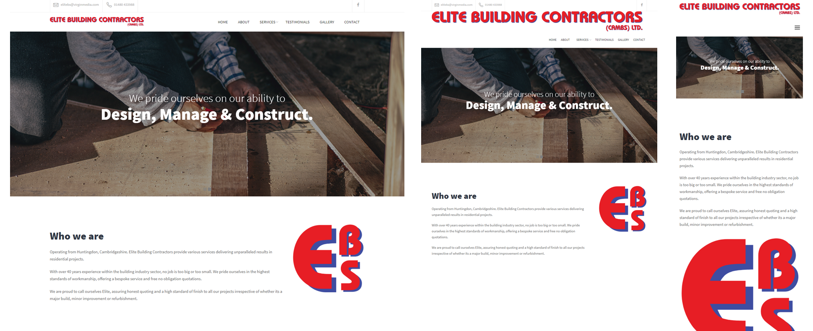

I created this WordPress website for my Dad's construction business in my free time. I decided to create it using WordPress, so that it would be possible for him to amend content as and when he needs to.
After looking around, I found a template I liked and used this as a starting point, while making some custom CSS changes, and using their UI to build up the site page by page.
